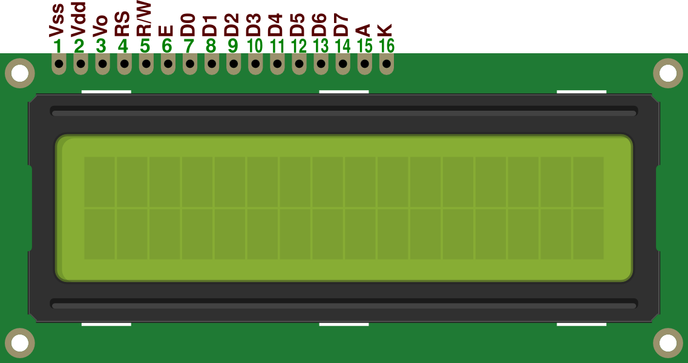
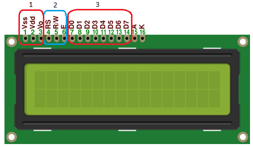

Manejo de la pantalla LCD
¿Que es la pantalla LCD?:
Los displays LCD (Liquid Crystal Display), permiten graficar o visualizar los caracteres contemplados en el código ASCII. Este esta gobernado por un microcontrolador el cual dirige todo su funcionamiento siendo este el HD44780.
Además del código ASCII, los displays LCD admiten graficar hasta 8 caracteres diseñados por el desarrollador.
Otra característica fundamental de los LCD, es la conexión del bus de datos, físicamente tienen 8 bits, pero es posible configurar las conexiones con solo 4 bits. La conexión de 8 bits implica una mayor cantidad de cables para su uso, pero la velocidad de trabajo es mayor, por consiguiente la conexión de 4 bits minimiza las conexiones pero disminuye la velocidad de trabajo.
Partes que conforman el display LCD:
-

- Pines de alimentación:
- Vss: Gnd.
- Vdd: 5V.
- Vo/Vee: Corresponde al pin de contraste, el cual se puede regular con un potenciómetro conectado a Vdd.
- Pines de control:
- RS: EL pin RS funciona paralelamente a los pines del bus de datos. Cuando RS es “0” el dato presente en el bus pertenece a un registro de control/instrucción y cuando RS es “1” el dato presente en el bus de datos pertenece a un registro de datos o un carácter.
- R/W: Este corresponde al pin de Escritura(0) o Lectura(1). Nos permite escribir un dato en la pantalla o leer un dato desde la pantalla.
- E: Corresponde al pin Enable o de habilitación. Si E = 0 esto quiere decir que el LCD no esta activado para recibir datos, pero si E = 1 se encuentra activo y podemos escribir o leer desde el LCD.
- Pines de Bus de Datos:
- El bus de datos bidireccional esta comprendido desde D0 hasta D7. para realizar la comunicación con el LCD podemos utilizar los 8 bits del bus de datos (desde D0 hasta D7) o empleando los 4 bits mas significativos (desde D4 hasta D7).
- DDRAM y CGROM: Son las dos zonas de la memoria del LCD.
- DDRAM (Display data Ram): Almacena los datos que se desean visualizar por pantalla representados en código de caracteres de 8 bits, es decir, es la memoria donde se almacenan los caracteres a mostrar con su correspondiente posición.
- CGROM (Character Generator ROM): Es una memoria interna donde se almacena una tabla con los caracteres que podemos visualizar en el LCD. Cuando se le dice al LCD quemuestre la letra “A”, este necesita saber que puntos activar para que se pueda observar una “A”, esta información es la que esta almacenada en la CGROM.

Manejo de la pantalla LCD con AVR Studio 5
Ahora se tratará el como hacer funcionar la pantalla LCD con el microcontrolador ATmega328P junto con el AVR Studio 5, para esto, se necesitará una librería adicional que se utilizará como un archivo de cabecera principal, con esta librería lograremos trabajar con la pantalla LCD mediante funciones muy sencillas de recordar.
Para descargar el archivo necesario basta con entrar a través del siguiente enlace: LCD_4bits.h
En él se logra descargar el driver necesario para trabajar con solo 4 bits de la pantalla LCD.
Una vez descargada, se verá que se tiene el archivo LCD_4bits.h: